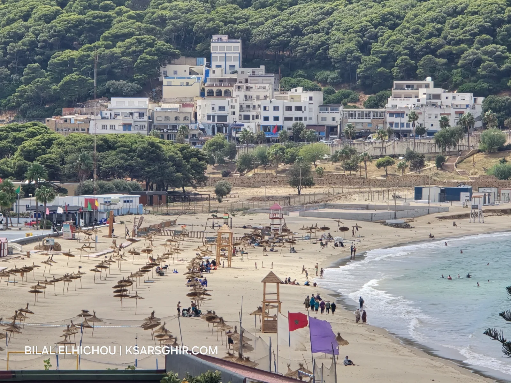

🏖️ Beaches
Ksar Sghir Beach
Ksar Sghir's main beach — golden sand and clear waters on the Strait of Gibraltar. Supervised, free, ideal for families.
Read moreBeaches, ports and history on the southern shore of the Strait of Gibraltar, through the lens of Bilal El Hichou.
Explore destinationsKsar Sghir (also spelled Ksar es-Seghir or Ksar Seghir) is a small coastal town in Fahs-Anjra province, about 35 km east of Tangier, right on the Strait of Gibraltar. On clear days you can see the Spanish coast from its beach. Nearby are quiet beaches such as Dalia, Oued Alian and Sidi Kankouch, the Tanger Med port and the village of Belyounech below Jebel Musa.
This guide covers everything you need to visit Ksar Sghir, Morocco: every beach, port and historic site, the best time to go, local services and tips from someone who lives here.

Ksar Sghir's main beach — golden sand and clear waters on the Strait of Gibraltar. Supervised, free, ideal for families.
Read morePhotos by Bilal El Hichou


Your feedback helps us improve this guide.
Thanks for your rating!